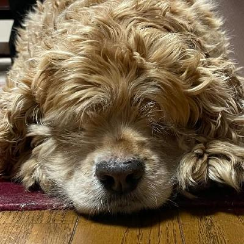
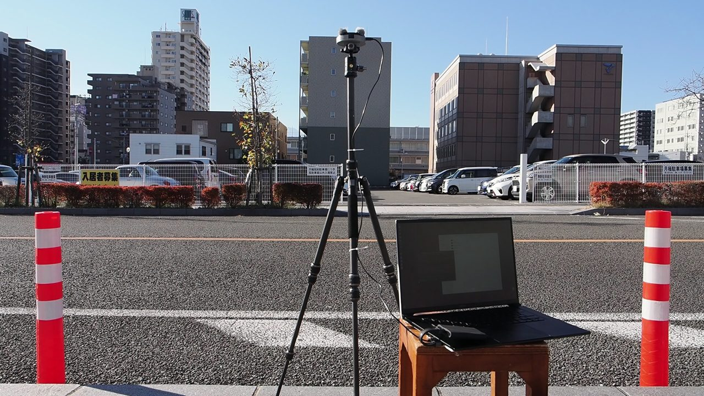

ウェアラブル自己位置推定
視覚障害者向けナビゲーションを想定し、装着型デバイスで歩行者の位置と向きを推定する研究です。GPSだけでは不安定になる市街地でも、周囲の情報から自分の位置を捉え続けることを目指します。
山梨大学大学院で、視覚障害者の移動を支えるウェアラブル自己位置推定を研究しています。カメラによる視覚ランドマーク、歩行者デッドレコニング（PDR）、そしてマイクアレイによる音響情報を組み合わせ、屋外でも使えるナビゲーションの実現を目指しています。

……むにゃGitHubでも使っているアバター（クリックしてみて）
| 名前 | 水上 大河（Taiga Mizukami） |
|---|---|
| 所属 | 山梨大学大学院 医工農学総合教育部 工学専攻 メカトロニクス工学コース 小谷・渡辺研究室 |
| 学年 | 修士1年（2026年度時点） |
| 出身 / 現在 | 北海道出身、山梨県甲府市在住 |
| 関心 | 視覚障害者支援、自己位置推定、コンピュータビジョン、音響信号処理、3DCG / VFX を使った地域PR |
Taiga Mizukami is a master's student at the University of Yamanashi, Japan. His research focuses on wearable self-localization for people with visual impairments, combining visual landmarks, pedestrian dead reckoning, and microphone-array acoustics.
「見えない・見えにくい人の移動を、テクノロジーでもっと自由にしたい」というテーマを軸に、センシングと認識の研究をしています。研究の外では、実写映像に3Dキャラクターを合成するバーチャル観光VFXのプロジェクトにも取り組んでいます。
視覚障害者向けナビゲーションを想定し、装着型デバイスで歩行者の位置と向きを推定する研究です。GPSだけでは不安定になる市街地でも、周囲の情報から自分の位置を捉え続けることを目指します。
カメラ画像から周囲のランドマークを捉える視覚情報と、IMU等による歩行者デッドレコニングを組み合わせ、移動中も途切れにくい自己位置推定を行います。物体検出には YOLO 系モデル、状態推定には粒子フィルタなどを活用しています。
ReSpeaker マイクアレイによる多チャンネル録音を用い、車両の通過方向など周囲の音響情報を安全支援に活かす方法を検討しています。視覚情報だけでは得られない「音から分かる周囲の動き」を取り入れるのが狙いです。

※ このページでは研究の概要のみを紹介しています。未発表データや原稿の詳細は掲載していません。
固定カメラで撮影した観光地の実写映像（10〜30秒）に、トゥーン表現の3Dご当地キャラクターを合成し、自治体・企業向けの観光PRコンテンツとして届ける取り組みです。
最初の実例として、実写映像とオリジナルキャラクター「巡」を合成した10秒作品を制作。制作では Blender を中心に、将来的な展開として Unreal Engine 5 も視野に入れています。
屋外実験のための多センサー同時記録に取り組んでいます。カメラ、RealSense、マイクアレイ、IMU を組み合わせ、歩行・車両通過などの場面を再現可能に記録し、後から評価できる形に整えます。
アルバイト先の現場で実際に使われる小さな自動化ツールも作ってきました。現場の手間を一つずつ減らす、実務寄りのものづくりが好きです。
ビジョン技術の実利用ワークショップ（ViEW2026、パシフィコ横浜）にて発表予定。
IEEE/SICE International Symposium on System Integration（SII 2027、神戸）にて Late Breaking Report としてポスター発表予定。
“Wearable Self-Localization for the Visually Impaired with Visual Landmarks and Pedestrian Dead Reckoning”
『ばらかもん』が特に好きです。人の温かさと成長の描き方に惹かれます。
菅原紗由理「キミに贈る歌」の Nightcore 版をよく聴きます。
甲府駅前の横浜家系ラーメン「大黒家」がお気に入り。辛いものは苦手です。
ホワイトムスク系で揃えた、清潔感のある香りが好きです。愛用は Maison Margiela「レプリカ バブルバス」。
研究や制作の近況を、公開できる範囲で書いていきます。
連絡先メールアドレスは掲載していません。